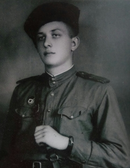

Сиомко
Виктор Антонович
Виктор Антонович
Дата рождения: 2.01.1926
Место призыва Гвардии красноармеец. Призван в РККА 08.1944г. Место призыва: Лидский РВК, Белорусская СССР, Полесская обл.
Дата призыва 08.1944
Гвардии красноармеец, пулемётчик
Воевал с августа 1944 по апрель 1945г.
17.02.1945г. уничтожил боевую точку противника у д.Рыбник (Чехословакия)
Награждён орденом Славы 3 ст.
15.04.1945г. поднял свой батальон в атаку, тяжело ранен. Награждён медалью "За боевые заслуги"
После войны, вместе с супругой Зинаидой Васильевной многие годы отдал педагогическому делу на Столинщине. Работали в д. Дубой, д. Плотница (директор школы), Столинской средней школе №1 учителем физики. Отличник образования, создал великолепный кабинет физики, которому может позавидовать любая школа. Вели колепно преподавал свой предмет и давал хорошие уроки жизни своим ученикам.
Многие его ученики добивались хороших результатов на олимпиадах по
физике разного уровня (например Леонид Кондратеня, окончивший
школу в 1967 году с серебряной медалью был участников
заключительного этапа Всесоюзной олимпиады по физике в Москве в
МФТИ) и стали впоследствии докторами и кандидатами наук,
известными конструкторами, учителями. По собственной инициативе
летом организовывал для учеников профильный лагерь по физике.
Виктор Антонович выступал с докладами о нём на областной и
республиканской учительских конференциях.